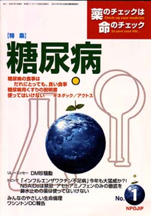

No.1 特集 糖尿病 2004年5月 第5刷発行
欧米では死亡する人の約半分は心臓病が原因となっていますが、日本人が心筋梗塞で死ぬのは１割にも満たない。健康な身体をつくるためには食事は最も大切なもの。日本人が世界一長寿であるのは、バランスのよい日本人の食生活のため心臓病が少ないことが大いに関係しています。
糖質、たんぱく質、脂質など３大栄養素を過不足なく（バランスよく）含む食事を、毎食、楽しくすることが健康な身体を作る基本です。その過不足が最も問題になるのが糖尿病。糖尿病によい食事はあらゆる人によい食事なので、糖尿病とその食事を知ることはすべての人に大切なことです。他の病気の人も、薬の治療を始める前、薬の良い悪いを判定する前に、まず健康な食生活を知ってほしいと思います。
心毒性のため、かねてから私たちが中止を呼びかけていた糖尿病用新薬「アクトス」で案の定、心不全が多数報告され、10月５日に厚生省の指導で「緊急情報」が出されました。インスリンの大切さとこれらの薬とも言えないものの危険性を知ってほしいと思っていたところなので、創刊号では「糖尿病とそのくすり」を取り上げることにいたしました。
もくじ
■海外からのメッセージ
アンドリュー・ヘルクスハイマー氏
前DTB(Drug & Therapeutic Bulletin)編集長
前国際情報誌協会ISDB(International Society of Drug Bulletin)代表
UKコクランセンター名誉特別会員
特集
■糖尿病の治療で大切な考え方
■糖尿病の食事はだれにとっても良い食事
■糖尿病の具体的な治療方法
■糖尿病用薬の説明書
■薬剤についての基本的な考え方
■糖尿病用薬の説明書（NPOJIPの判定付き）
・インスリン
・スルホニルウレア剤（SU剤）
・ビウアナイド剤
・αグルコシダーゼ阻害剤
・エパルレスタット（キネダック）
・ピオグリタザオン（アクトス）
特集
■キネダックは使ってはいけない
効果なく、肝毒性の可能性がある
■アクトスも使ってはいけない
長期使用の効果不明。心毒性の高い可能性あり
長期使用では利益よりも危険のほうがはるかに大
連載
■ワシントンDC報告
■新薬承認のカラクリ
動物実験の見方（アクトスを例に）
連載
■リレーエッセイ ＤＭ珍騒動
とりくみ
■医師（医療機関）とのつき合い方−NPOJIPへの相談事例から
１ 危険な薬の処方をめぐって
調剤薬局薬剤師と医師
２ よいよい終末期ケアとは
患者（家族）と医師
トピック
■１ 「インフルエンザワクチン不足病」今年も大猛威か？！
だけどインフルエンザワクチンは効かない！！
■２ NSAIDs禁忌アセトアミノフェンのみの徹底を
脳症との関連確認で一歩前進したNSAIDs使用制限
■３ 鼻水止めの薬は使ってはいけない
PPA等交感神経刺激剤を含有する製剤は使用中止を
連載
■みんなのやさしい生命倫理
「人を殺すのがなぜ悪いの？」
■NPOJIPおよび関連の出版物案内
■出版書籍申込み用紙
■読者の意見／感想用紙
■編集後記
病院でよく聞く言葉
（特集にちなんだ言葉を簡潔に解説）忙しい人はまずここから
○糖尿病 −粗食も血管をいため逆効果
○血糖値・高血圧・低血糖 −特に心臓や血管に負担が大きい「低血糖」
○検尿 −糖尿病など様々な病気の発見や経過の判断に有効
○ブドウ糖負荷試験 −糖尿病など様々な病気の発見や経過の判断に有効
○HbAlc −過去1か月間の平均血糖値を反映
○インスリン − 飲み薬よりも高い価値
○心不全 − 心臓機能が低下し、呼吸困難に
○インフルエンザ − 大流行するのはA型
○インフルエンザの予防と治療の基本 −予防にワクチンは無効、治療は解熱剤を使わず安静に
○予防接種／ワクチン −発病せず免疫だけつくる
○予防接種の害 −患者減少すると害が顕著に
○免疫 −異物から体を守る
○かぜ −抗生物質や解熱剤は不要
○炎症 −傷ついた体を修復
○解熱剤 −かえって病気を悪化させることも
（日本経済新聞に浜六郎が掲載していたものを改変。加筆、新しく追加したものを含む）
編集後記より
NPOJIP情報誌第１号をお届けします。１回目の編集会議をもったのが10月13日、本の形式や特集のテーマ、連載記事に関して議論し、雑誌としての大枠は決まったものの、原稿が出そろうまでは内容も分量も十分な把握ができず、ギリギリまで四苦八苦しました。「○○字でお願いします」と原稿依頼するのが一般的ですが、それの通用しない筆者（この人は校正も原型をとどめないような校正になることがしばしば！）がいたり、目次立ても決まり、１回目の校正に取りかかる段になって、トピック記事の２）と３）およびそれらに関連する記事を急遽追加することになり、ページ数は増える一方。最終的に何ページになるものやら、「もうこの際、創刊号大サービス、大増ページだ！」と居直ってせっせと校正に励みました。
本誌の編集方針は、「創刊のことば」にも述べましたが、一番の特色は、医療の消費者である患者・市民と、医師・薬剤師など医療に従事する人々の双方にとって役立つ情報を提供していることです。編集メンバーは、医療の素人つまり消費者側が５人、医療従事者は４人（医師３人、薬剤師１人）です。幸いに、素人がドシドシ意見や疑問をぶつけても、いやな顔をせずに丁寧に答えてくれる医療者ばかりです。そのような関係が当たり前のこととしてもっと広がるようにと願っています。
もう一つの特色は、いっさいの広告がないこと。スポンサーの意向にとらわれない情報誌であるためです。そのためにも、読者のみなさまがひとりでも多く、本誌を購読し、広め支えてくださるようお願いします。
当面は春夏秋冬の季刊誌として次号は春４月半ばに。（坂口）